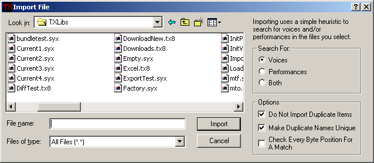

Library File Menu

New creates an empty library with no file name.
Open loads a library into the program from a file.
Save saves the library to the file indicated in the file name
indicator. If the library has no file name, you will be prompted for one.
Save As... saves the library in a new file.
Import imports items from a file into the library. Selecting this menu
item brings up the Import File dialog box.

Importing actually does a heuristic search for data that could conceivably be
a voice or a performance by checking the range of each byte in a potential
match to see if they all fall within valid ranges. This allows you to import
patches from any file whatsoever. Here are some of the voice patches that
exist in Microsoft Excel:
But seriously, I created this feature because I had some old disks from a V50
that I wanted to recover the patches from, but the disks couldn't be read by
DOS, even though they were IBM compatible disks. So, I used a disk utility to
create some raw disk images, which is like having the entire disk in one file,
and I used this import function to search the file and recover the patches.
It worked pretty good, so I kept it in here.
You can search for voices, performances, or both. Performances are kind of
useless if you don't know which patches go with them, and that information is
lost when importing, but it's conceivable that you could figure it out by
looking at the patch numbers and judging by the order of the voices that were
imported. I didn't implement any help for this task because that's way beyond
the scope of this program and I didn't think it would be that useful, anyway.
Do Not Import Duplicates is like the
Disallow Duplicates menu
item. It will prevent importing duplicate patches, even if they have the same
name.
Make Duplicate Names Unique will put a number in patch names that are
the same and increment it so the names of the imported patches are all unique.
Two patches that have the same name can still have different parameter
settings, so even if you disallow duplicates, some of the imported patches can
still have the same name.
Check Every Byte Position For A Match will start the search at the next
byte after finding an item. Normally when an item is found using the heuristic,
the search will begin at the byte following the match, but when this is checked
it will starting searching from the second byte of the match. This will
increase the number of patches found, but there will likely be a lot of overlap.